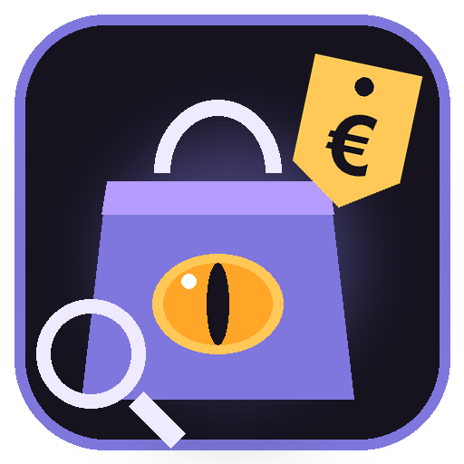

Typ in de grote zoekbalk wat je zoekt, bijvoorbeeld dvd speler of zeep, en druk op Enter of klik op Zoek. De app zoekt tegelijk op twee manieren:
| Tabblad | Wat je ziet |
|---|---|
| 💰 Prijsvergelijker | Producten van Kieskeurig.nl (honderden webwinkels) en Beslist.nl, goedkoopste eerst. Per product: foto, prijs "vanaf", aantal winkels. |
| 🌐 Heel internet | Een ingebouwde browser met je zoekopdracht in Google Shopping (of een andere zoekmachine naar keuze). Hier vind je alle winkels, ook de kleine. |
| 👁 Prijswachter | Je volglijst met doelprijzen en het prijsverloop. |
| 🏪 Winkels | Lijst van alle winkels met hun prijs en of het op voorraad is. Klik op Bekijk om de winkel te openen. |
| 👁 Volg prijs | Zet het product in de prijswachter. Je kiest zelf de doelprijs (standaard 10% onder de prijs van nu). |
| 🌐 Bekijk | Opent de productpagina in het tabblad Heel internet. |
Sorteer: goedkoopste eerst, duurste eerst of meeste winkels. Max. prijs: laat alleen producten tot dat bedrag zien. Meer resultaten laden staat onderaan de lijst. Ook kijken bij: bol, Coolblue, Tweakers, Amazon.nl, MediaMarkt, Kruidvat. Die openen je zoekopdracht in de ingebouwde browser.
Kies bovenaan bij Zoek op de zoekmachine: Google Shopping, Google, DuckDuckGo, Bing Shopping, Kieskeurig, Beslist of Tweakers. Links die normaal een nieuw tabblad openen, openen gewoon in de app. Met ◀ ▶ ⟳ ga je terug, vooruit of herlaad je de pagina. In de adresbalk kun je ook een webadres typen.
Sta je op de pagina van één product in een webwinkel? Klik dan op de gouden knop 👁 Volg deze prijs. De app leest de prijs van de pagina en zet het product in de prijswachter.
Open in mijn browser opent dezelfde pagina in je gewone browser.
| 🔄 Nu controleren | Kijkt meteen bij alle producten in je lijst wat de prijs nu is. |
| Controleer elke | 1, 2 (standaard), 4, 6 of 12 uur. |
| Geluid bij alarm | Vinkje aan: drie piepjes als een prijs onder je doel zakt. |
| 🌐 Open (of dubbelklik) | Opent de productpagina. |
| 🎯 Doelprijs wijzigen | Stel een nieuwe doelprijs in. |
| 🗑 Verwijderen | Haalt het product uit je lijst. |
Klik op een product in de lijst: onderaan zie je het prijsverloop als lijn. De gouden stippellijn is je doelprijs.
Status: 🔔 ONDER JE DOEL! · ⬇ lager · ⬆ hoger · wacht nog · kon niet kijken.
Alles staat naast de app in de map DraveShopBuddy-data: je volglijst (prijswachter.json), instellingen, foto's (cache) en de browsergegevens. Niets in AppData of op C:, tenzij je de app daar zelf neerzet.
De app zegt wie hij is en doet maar een paar verzoeken per zoekopdracht. Een site die automatisch zoeken weigert, slaat hij over ("niet bereikbaar"). Die kun je altijd zelf bekijken via Heel internet. Er gaat niets van jou mee, alleen je zoekwoord.
| Enter in de zoekbalk | Zoeken |
| Enter in de adresbalk | Naar het adres (of zoeken als het geen adres is) |
| Ctrl+Shift+U | Zelf kijken of er een nieuwe versie is |